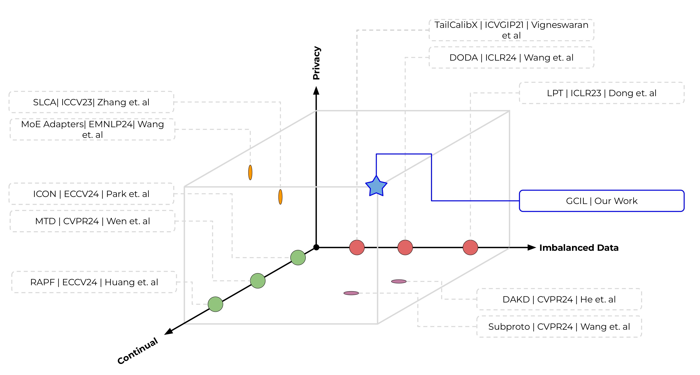
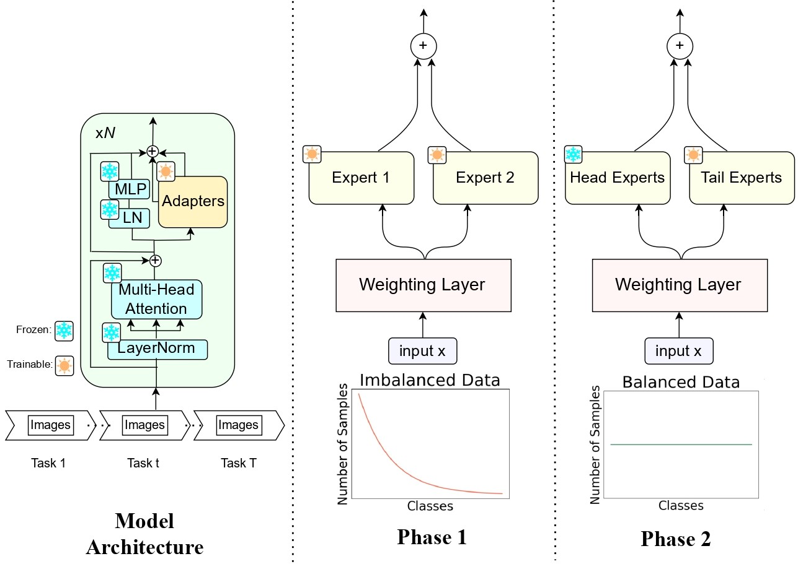
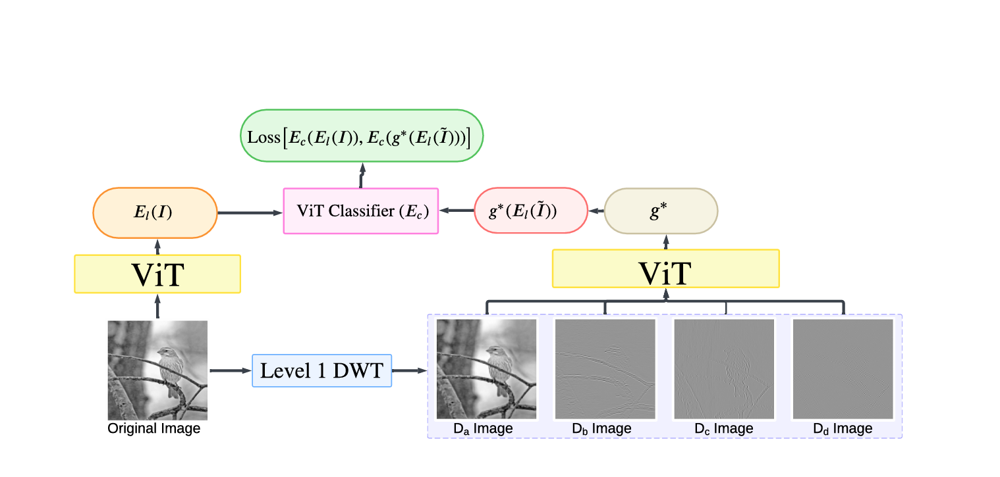
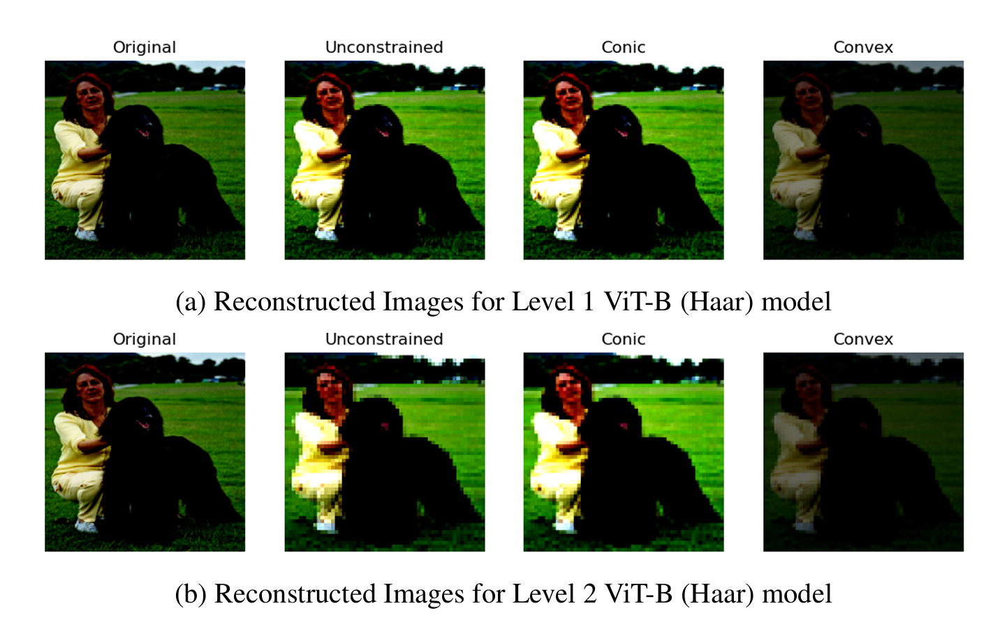

Research Projects
Exploring the frontiers of AI and Technology
DES: A Smarter Way to Grow Machine Learning Models Over Time
Continual Learning Research
This project was conducted at IIT Hyderabad's Machine Learning and Vision Lab, under the guidance of Dr. Vineeth N. Balasubramanian. It was a part of my research in Continual Learning, a paradigm where the goal is to train models on tasks that arrive over time—like how humans learn—without forgetting past knowledge.
Most existing methods rely on unrealistic assumptions like having access to balanced data or stored old samples, which is rarely possible in practical settings. We proposed a new learning setup called AFCIL (Assumption-Free Class-Incremental Learning) that removes these assumptions. It does not require stored data, handles imbalanced tasks, and supports pre-trained models like CLIP.

Figure 1: Our Problem Setting - AFCIL Framework
We introduced a two-stage training strategy called Dynamic Expert Saturation. In the first stage, the model is trained on head (frequent) classes. In the second stage, it incrementally saturates the model to tail (rare) classes using dynamically added lightweight expert adapters. This naturally handles class imbalance and avoids catastrophic forgetting.

Figure 2: Our Model Architecture and Training Phases
The model was implemented using PyTorch with a CLIP backbone and lightweight MLP adapters. We achieved state-of-the-art performance on CIFAR100-LT and ImageNet-LT, outperforming prior methods such as DualPrompt, CODA, and MoE-Adapter by up to 6% in top-1 accuracy.
Enhancing Tumor Segmentation using Synthetic Data
I am currently working as a research intern at the Laboratory for Machine Learning, Health, and Biomedicine at the University of Southern California. The project focuses on improving and automating the challenging task of tumor segmentation in breast and lung cancer.
Manual annotation of medical images is time-consuming and requires significant effort from clinicians. Our goal is to reduce this burden by developing a segmentation model that is both accurate and generalizable. A major challenge is the domain shift that occurs when models trained on one dataset are applied to another.
We address this by generating synthetic data to simulate a variety of domain scenarios. This helps the model learn more robust representations. The ultimate aim is to build a segmentation pipeline that can handle diverse real-world inputs and improve productivity in clinical workflows.
Making Vision Transformers More Human-Like
Explainability in Vision Transformers
This research project was conducted at the Lab for Vision and Image Analysis, IIT Hyderabad, under the guidance of Dr. Sumohana S. Channappayya, and has been submitted to NeurIPS 2025. We investigated how Vision Transformers (ViTs) understand complex visual inputs by studying their ability to combine parts into whole representations.
We designed a framework using wavelet transforms to decompose images into frequency-based primitives. We then tested whether ViTs could reconstruct meaningful representations by linearly combining these parts. The models were built and trained in PyTorch and evaluated on the ImageNet dataset.

Figure 3: Framework of our wavelet-based image decomposition and re-composition
Our experiments demonstrated that ViTs—despite being highly nonlinear—exhibit compositional behavior in deeper layers. We also found that this structure persists under real-world distortions such as additive noise and JPEG compression, suggesting that these properties are both meaningful and robust.

Figure 4: Reconstructing images in pixel space using weights learned on representation space